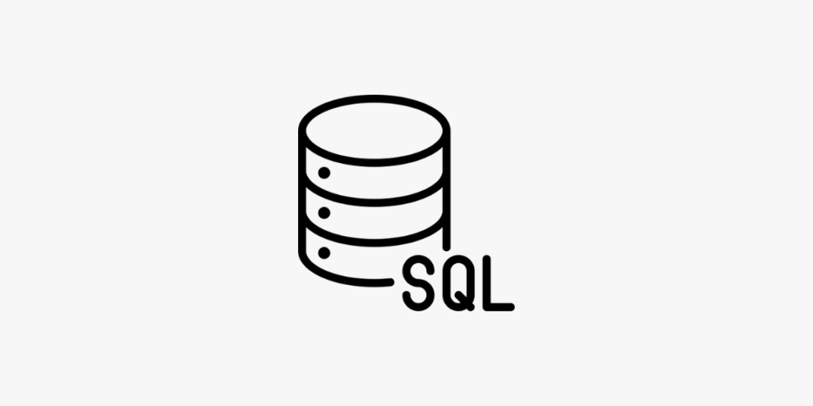

Utilisation du pack office
lors de ma Licence AIC.
Tableau croisé dynamique,
base de donnée sur excel

Création d'un site d'annonces
immobilières.
Création de mon CVeb

Utilisation de ce langage
durant toute l'année de DUT

Manipulation Switch Cisco
durant deux mois
(stage
DSIT Mairie d'Arles),
interface ligne de commande